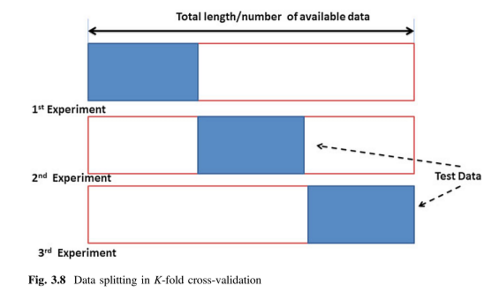

Candidacy Exam
Hippocampal-Volume-Ratio as a Predictor of Cognitive Decline
Extra slides
Integrated Program in Neuroscience
Sofía Fernández Lozano
Segmentation methods
MALF
- Selection of n most similar templates from template library
- ANIMAL segmentation is performed on each template
- Final label is determined based on majority voting
Non-local Patch-based Segmentation
- Initialization mask around structure of interest
- Subject selection with sum of square differences
- Definition of search volume around voxel of interest
- Patch preselection using structural similarity measure
- Nonlocal means weighted label fusion
K-Fold CV vs MCCV
K-Fold CV vs MCCV


GAMLSS Model
GAMLSS Model
- Generalized additive models for location, scale and shape (GAMLSS) are semi-parametric regression type models.
- The exponential family distribution assumption for the response variable (y) is relaxed and replaced by a general distribution family, including highly skew and/or kurtotic continuous and discrete distributions.
\[y_i \\
\textrm{for} i = 1,2,...,n \\
f(y_i\vert\boldsymbol{\theta}^i) \\
\begin{aligned}
\boldsymbol{\theta}^i = (\theta_{1i},\theta_{2i},\theta_{3i},\theta_{4i})
= (\mu_i, \sigma_i, \nu_i, \tau_i)
\end{aligned}\]